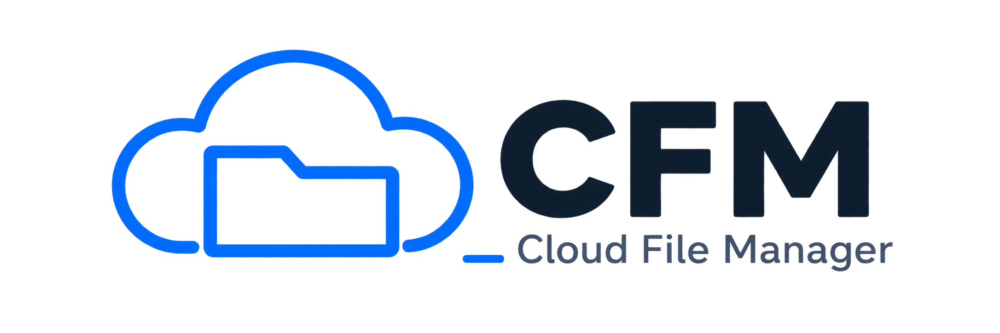

Local files
Browse folders, open files, create folders and text files, rename, delete, copy, move, and view file properties.

CFM is an Android file manager that helps users browse local files and work with cloud storage accounts such as Google Drive and Yandex Disk.
Browse folders, open files, create folders and text files, rename, delete, copy, move, and view file properties.
Connect a Google account to view, download, upload, rename, and delete files in Google Drive when the user grants access.
Users can revoke Google access at any time in their Google Account security settings.